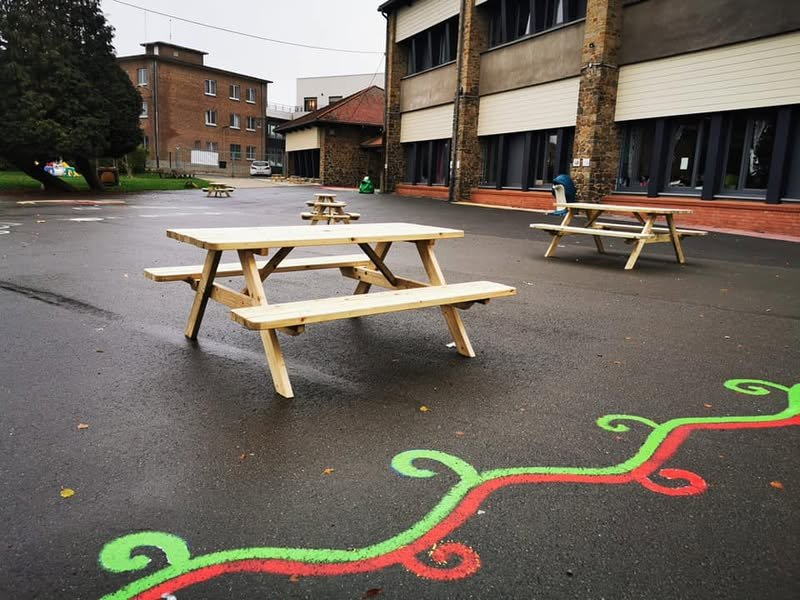
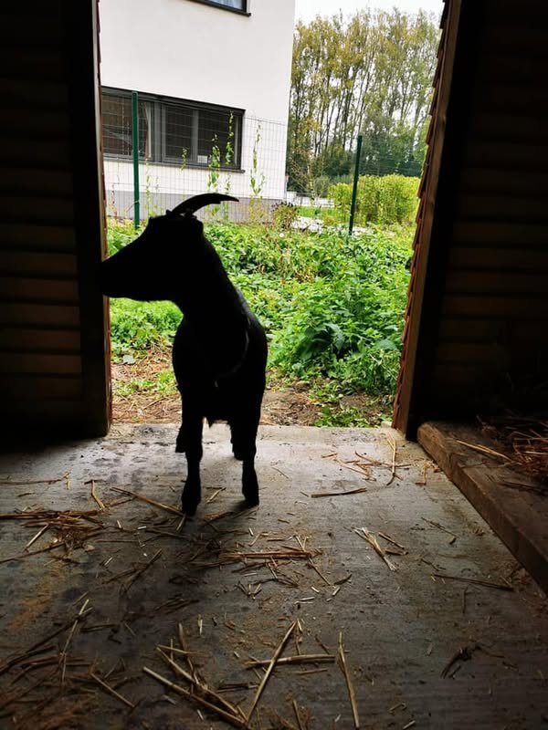
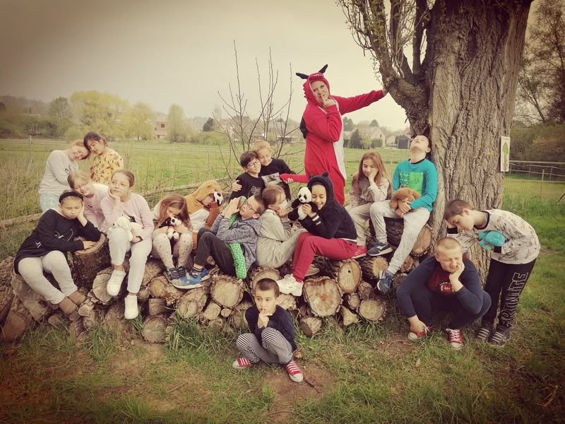

De l’espace pour jouer et se retrouver
La cour et les espaces extérieurs offrent aux enfants des lieux pour bouger, partager une récréation et profiter du grand air.
La vie à l’école
À Saint-Joseph, les enfants apprennent, jouent et grandissent ensemble dans un cadre familial et verdoyant.
Le plaisir de grandir ensemble

La cour et les espaces extérieurs offrent aux enfants des lieux pour bouger, partager une récréation et profiter du grand air.

Un cadre verdoyant et un poulailler donnent à notre école son caractère rural, au cœur de Jemeppe-sur-Sambre. Un environnement propice à l’observation et à la découverte.

Les activités partagées et les projets de l’école donnent une place à l’entraide, à la créativité et au plaisir de découvrir ensemble.
Livres, écriture et projets artistiques nourrissent la curiosité et l’expression des enfants.
Le jardin et les espaces verts invitent à découvrir le vivant et à porter attention à son environnement.
Rencontres, activités collectives et projets solidaires donnent du sens au vivre-ensemble.
Gardons le lien
Les activités, les projets et les rendez-vous de Saint-Joseph sont à retrouver sur notre page Facebook.
Et si on se rencontrait ?
Venez rencontrer notre équipe, découvrir les lieux et poser toutes vos questions. Nous vous accueillons sur rendez-vous.